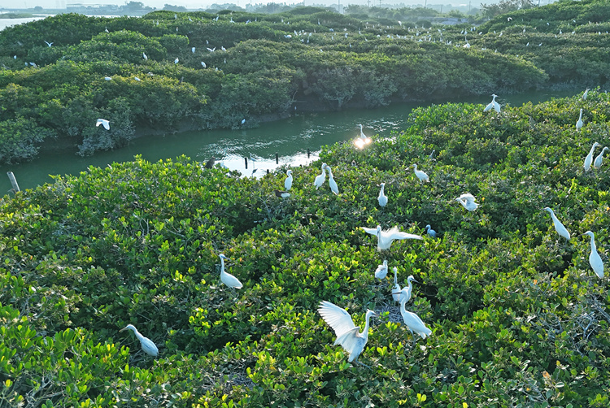

Social-Ecological System Sustainability Lab
Welcome to the SESuS Lab
We study coastal social-ecological systems, environmental economics, and climate adaptation to support sustainable development across ecosystems, economies, and society.
- Systems
- Coasts, mangroves, aquaculture, communities
- Approaches
- Social-ecological analysis, environmental economics, modelling
- Impact
- Restoration, adaptation, ecosystem management, decision support
About
Research for sustainable coastal social-ecological systems.
The Social-Ecological System Sustainability Lab is based at Xiamen University and led by Professor Jie Su.
Profile
Curriculum Vitae
Recognition